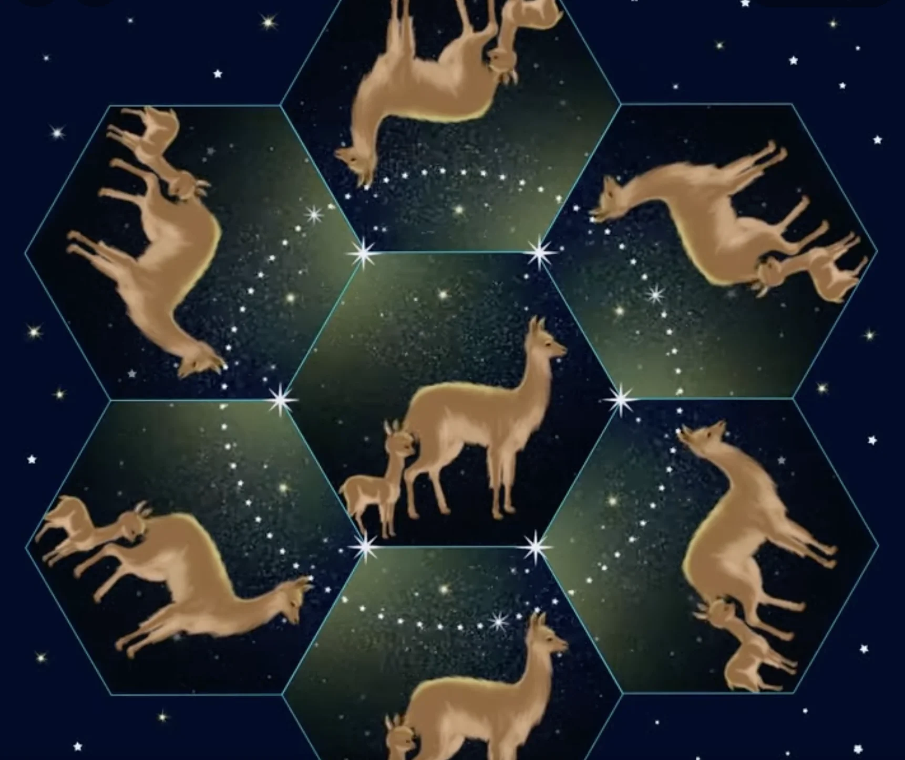

Archivo de obras fulldome
Esta sección reúne una selección curada de obras vinculadas a prácticas de música visual, experimentación audiovisual y producción artística en entornos inmersivos. Más que un archivo exhaustivo, la plataforma propone un mapa de prácticas que permite explorar diferentes formas de creación en formato fulldome.
Mapa de prácticas
01 · Música visual
Música visual
Relaciones estructurales entre sonido e imagen en entornos inmersivos.
02 · Arte generativo
Arte generativo
Producción audiovisual basada en algoritmos y sistemas dinámicos.
03 · Performance audiovisual
Performance audiovisual
Creación en tiempo real mediante interacción sonora, visual y corporal.
04 · Arte y ciencia
Arte y ciencia
Visualización de fenómenos científicos, astronomía y cartografías del cielo.
05 · Narrativas sensoriales
Narrativas sensoriales
Experiencias inmersivas vinculadas a ritualidad, percepción y espacio.
06 · Investigación artística
Investigación artística
Proyectos desarrollados desde metodologías de investigación-creación.

Speak Dome
Ver ficha
Binary Opposition
Ver ficha
Fuzee
Ver ficha
métodoEntropia1
Ver ficha
Improvisation no.1
Ver ficha
